1. Teoria dei Gruppi
1.1 Definizioni Preliminari
Monoide
Link all'originaleGruppo
Sia un insieme e una funzione binaria. Esso si dice gruppo se:
- (associatività)
- (elemento neutro)
Gruppo
Link all'originaleGruppo
Sia un insieme e una funzione binaria. Esso si dice gruppo se:
- (associatività)
- (elemento neutro)
- (inverso)
Se vale la proprietà commutativa: allora tale gruppo si dice abeliano
Sottogruppo
Sottogruppo
Sia un gruppo, e . Esso si dice sottogruppo se:
- , cioè
- , cioè
Notazione: se è sottogruppo di si scrive
Link all'originaleOsservazione
Se allora le proprietà 1. e 3. implicano la 2.
Infatti
Caratterizzazione dei Sottogruppi
Link all'originaleCaratterizzazione dei Sottogruppi
Sia un gruppo e sia .
Allora vale la seguente equivalenza:
Gruppo Generale Lineare
Link all'originaleGruppo Generale Lineare
L’insieme è chiamato Gruppo Generale Lineare.
Tale Insieme, munito del prodotto righe per colonne è un gruppo.
É isomorfo al gruppo , ossia il gruppo degli automorfismi invertibili su uno spazio vettoriale di dimensione .
1.1 Classi Laterali
Classi Laterali
Link all'originaleClassi Laterali
Sia un gruppo e un suo sottogruppo.
Considerato , l’insieme è chiamata classe laterale (o coset) sinistra di definita da .
La classe laterale destra è l’insieme
Risulta che per lo stesso , la classe laterale destra e sinistra non sempre coincidono:
Inoltre e e le classi laterali distinte sono disgiunte, mentre la loro unione è stesso.
Quindi le classi laterali sono delle classi di equivalenzaSe si usa la notazione additiva e il gruppo è abeliano, allora le classi laterali si indicano:
e dalla proprietà commutativa risulta che .
Esempio di Classi Laterali
Link all'originaleEsempio di Classe Laterale
Considero il gruppo e il sottogruppo .
I laterali sinistri di sono:
- ;
- ;

Classi laterali destre:

Congruenza Sinistra e Destra
Congruenza Sinistra e Destra
Sia un gruppo e un sottogruppo.
Definisco le relazioni binarie tali che :
ossia
ossia
Tali relazioni prendono il nome di congruenza destra e sinistra definite da inProposizione
Risulta che la congruenza è una relazione di equivalenza
Link all'originaleDim
- Riflessiva:
- Simmetrica:
- Transitiva:
Supponiamo .
Risulta inoltre che
Teorema di Lagrange
Teorema di Lagrange
Sia un gruppo finito e un sottogruppo.
Allora divide .Dimostrazione
Sia la partizione di ottenuta mediante le classi laterali sinistre distinte, cioè:
Allora .
Dimostriamo che :
Costruiamo la funzione
\begin{align} \varphi:H\to g_{i}H \\ h\longmapsto g_{i}h \end{align}
Osservo che , dunque la mappa è iniettiva.
La funzione inoltre è suriettiva per definizione di classe laterale, dunque è biettiva.
DunqueLink all'originaleOsservazione
Abbiamo dimostrato che tutti i sottogruppi di un gruppo finito hanno ordine che sia divisore di .
Ma non è detto che ad ogni divisore di corrisponde un sottogruppo avente come ordine tale divisore.
Ad esempio , il gruppo alterno di ha ordine
Indice di un Sottogruppo
Link all'originaleIndice di un sottogruppo
Sia gruppo e un sottogruppo.
Il numero di classi laterali definite da su si indica con .
Se è finito, allora ; se è infinito, allora il numero di cosets potrebbe essere infinito.
si chiama indice di in
Osservo che l’indice di è
Proposizione su Gruppi Finiti
Proposizione
Sia un gruppo finito. Per ogni si ha: divide
Proposizione
I gruppi di ordine primo sono ciclici e isomorfi a
Dim
Sia un gruppo tale che primo. Allora (poiché ). Poiché divide allora , cioè
Proposizione
Sia un gruppo finito di ordine . Allora
Link all'originaleDim
Sia , allora è divisore di , cioè .
Allora
Funzione di Eulero
Link all'originaleFunzione di Eulero
La funzione che associa ad ogni numero la quantità di numeri primi minori di
Si dimostra che se è primo,
Se con coprimi, allora
Questa proprietà è conseguenza del Teorema Cinese del Resto
Ad esempio
Teorema di Eulero
Teorema di Eulero
Considero la funzione di Eulero e siano due numeri interi.
Risulta cheLink all'originaleDim
Consideriamo l’insieme degli elementi unitari di , ossia .
Dunque .
Se sono coprimi, allora .
Teorema di Moltiplicazione degli indici
Teorema di Moltiplicazione degli indici (Teorema di Lagrange Generalizzato)
Sia un gruppo finito. Se , allora:
Nel caso finito si ha:
Link all'originaleDim
Considero come unione disgiunta di classi laterali. Inoltre si può considerare .
Pertanto risulta che: unione disgiunta.
Quindi le classi laterali di in sono del tipo
Sottogruppo Normale
Sottogruppo Normale
Sia un gruppo e un suo sottogruppo.
Esso si dice normale se e si denota
Se un sottogruppo è normale, allora posso valutare un’espressione del tipo:
Link all'originaleEsempio
Considero e il suo sottogruppo
Otteniamo 2 classi laterali, infatti
Condizione necessaria e sufficiente per la normalità di un sottogruppo
Condizione necessaria e sufficiente per la normalità di un gruppo
Sia gruppo e sottogruppo.
AlloraDim
Supponiamo che , allora .
Viceversa, posto .
Scambiando il ruolo di e , ottengo da cui .Link all'originaleOsservazione
Da questo teorema risulta dunque che basta dimostrare:
oppure che .
Ogni sottogruppo di indice 2 è normale
Proposizione
Ogni sottogruppo di indice 2 è normale
Link all'originaleDim
Supponiamo di indice 2, dunque ha 2 classi laterali. Supponiamo .
Allora , da cui . Similmente , da cui .
1.3 Gruppi Diedrali
Gruppi Diedrali
Gruppi Diedrali
Il gruppo diedrale può essere considerato come il gruppo di riflessioni e rotazioni simmetriche di un poligono regolare di lati.
È definito come
Risulta dunque che
Possiamo rappresentare e in forma matriciale:\cos \left( \frac{2\pi}n{} \right) & -\sin\left( \frac{2\pi}n{} \right) \
\sin\left( \frac{2\pi}n{} \right) & \cos \left( \frac{2\pi}n{} \right)
\end{bmatrix}\qquad\tau=\begin{bmatrix}
1 & 0 \
0 & -1
\end{bmatrix}$$Link all'originaleGruppi normali di
Consideriamo l’insieme
Osserviamo che , dunque per l’osservazione precedente tale sottogruppo è normale.
Tale sottogruppo non è l’unico normale, infatti tutti i sottogruppi sono normali:
Invece, per osserviamo che il gruppo non è normale, in quanto:
1.4 Gruppi Semplici
Gruppi Semplici
Gruppi Semplici
Un gruppo si dice semplice se i suoi sottogruppi normali sono solo e
Link all'originaleEsempio
Il gruppo è semplice, ma ammette sottogruppi non normali. In generale con sono semplici
I gruppi semplici sono ciclici di ordine primo
Proposizione
I gruppi semplici sono tutti e soli gruppi ciclici di ordine primo.
Link all'originaleDim
Supponiamo che sia di ordine primo. Allora i suoi sottogruppi hanno ordine e , rispettivamente e . Poiché è abeliano, allora i suoi sottogruppi sono tutti
Viceversa supponiamo che ammetta solo i sottogruppi e . Allora ha ordine primo, per cui è un gruppo ciclico e quindi abeliano. Dunque i suoi sottogruppi sono normali, da cui semplice.
1.5 Relazione di Coniugio
Relazione di Coniugio
Link all'originaleRelazione di Coniugio
Sia un gruppo. La relazione di coniugio è definita:
Classi di Coniugio
Link all'originaleClassi di Coniugio
Considerata la relazione di coniugio su un gruppo , di dimostra che è una relazione di equivalenza. Pertanto è possibile considerare le classi di equivalenza:
E si denota con
Relazione tra Sottogruppi normali e Classi di Coniugio
Link all'originaleOsservazione
Si osserva che:
è sottogruppo normale
Non è detto che le classi di coniugio abbiano tutte la stessa cardinalità, come per le classi laterali, non è detto inoltre che una qualsiasi unione di classi di coniugio costituisca un sottogruppo
Nel gruppo delle matrici quadrate invertibili, la relazione di coniugio è la similitudine tra matrici.
Per quanto riguarda invece i gruppi di permutazioni, verrà dimostrato che due permutazioni sono coniugate se hanno la stessa struttura ciclica.
1.6 Relazione di Congruenza
Congruenza
Link all'originaleCongruenza
Sia un sottogruppo normale. Allora risulta che la congruenza sinistra e destra coincidono () e prendono il nome di congruenza, cioè una relazione di equivalenza compatibile con l’operazione di .
Dunque
Per dimostrare che è compatibile con l’operazione di , dobbiamo verificare che
ossia che
Ricordando che le classi laterali destre e sinistre coincidono per la normalità di :
.
Insieme Quoziente dei Laterali
Link all'originaleInsieme Quoziente dei Laterali
Considerata la relazione di congruenza, si possono considerare le sue classi di equivalenza e dunque l’insieme quoziente.
Dato un gruppo e un suo sottogruppo normale , si indica l’insieme quoziente dei laterali con .
Poiché la congruenza è compatibile con l’operazione d’insieme, quest’ultima si può estendere agli elementi dell’insieme quoziente:
in quanto .
Risulta inoltre che ha struttura di gruppo, quindi prende il nome di Gruppo Quoziente modulo